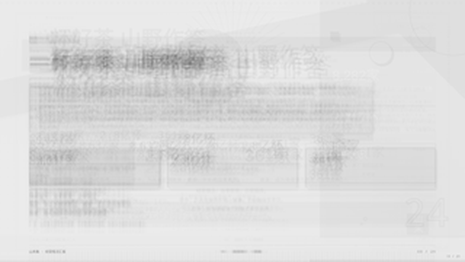
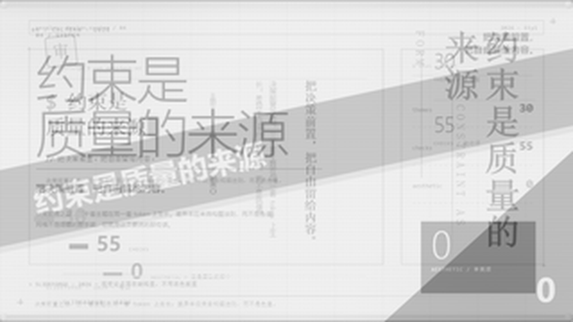
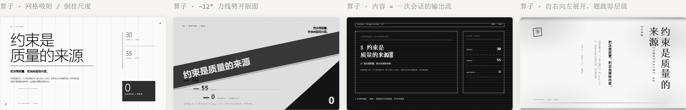

SlideForge · 深层审美诊断 / Round 2
问题不在构图，也不在配色。
是主题从来没有权力决定信息如何进入空间。
上一轮把版式从「排版过的 Word」改成了有构图决策的页面，但那只解决了「好不好看」。这一轮要处理你说的「没有灵魂」：为什么 30 个主题、30 份写得相当精彩的世界参考，渲染出来却是同一张脸；以及怎么把灵魂真正编译进 HTML，而不是写在 Markdown 里。
01
灵魂在哪里丢失的
按 theme.md 与 SKILL.md 的实际消费链路追踪
先说结论：项目并不缺灵魂，缺的是灵魂的传输通道。b1/theme.md 写了「1960 年代瑞士海报、加号角标、倒挂字重、禁居中对称」，e5/theme.md 写了「−12° 对角力线劈开版面、红楔、阶梯错排」，c3 写了「整页是一次终端会话的输出流」，h1 写了「从右向左展开的手卷与题跋」。这些描述本身已经是美术指导级别的东西。问题是它们去了哪里。
theme.md · 一个主题的完整定义（G0–G9 + bake_brief）七层表达力栈、世界参考、unforgettable、分化声明、layout_blueprints、rendering_constraints……全部在此，写得很细。
通道 A · 给人读
G0 世界参考 / unforgettable / 分化声明
SKILL.md · Step 2 原文：「G0 的『世界参考』与『unforgettable』是向用户解释主题气质的最好语言」。它是选型话术，不是生成侧指令。
→ 消费方：人与选型面板 · 不进 HTML 产物
通道 B · 给生图模型读
bake_brief · layout_blueprints / 主导隐喻 / 标题重构
index.md §47 原文：「整页生图风格圣经（七层栈的生图翻译层，不进 HTML 产物）」。只被 compile-bake-prompts.py 消费，即只在「烙入」整页生图时生效。
→ 消费方：Step 5.6 烙入 pass · 纯 HTML 产物拿不到
通道 C · 唯一进 HTML 的
G1 色值 · G2 字体 · G3 质感 · G9 母题 CSS · G5 动效
填进 SLOT: theme tokens 与 SLOT: theme css。而 G9 母题被 index.md §73 定义为「在产物中是装饰」，一律 data-editable-skip——不承载信息。
→ 消费方：SLOT: slides 的 DOM 仍由通用最优解决定
所以断层是结构性的：能定义身份的字段（世界观、签名动作、页角色蓝图）全部走 A/B 两条不进产物的通道；唯一进产物的 C 通道是一组可替换的形容词——色值、字体、纹理、贴纸、缓动。而 skeleton.html 的 SLOT: slides 明确写着「生成侧逐页决定」，主题对「信息如何被摆进空间」没有任何主权。于是 30 个主题共享同一副骨架，差异只落在皮肤层。
更关键的是制度层：sync-themes.mjs 第 41–43 行把「两个主题是否不同」定义为 L1–L7 七层中至少 3 层实质分化（规范化文本比较）。也就是说，系统在 Markdown 元数据里判定 30 个主题两两分化合格，从来没有渲染过一帧画面来确认「看起来不同」。components.md §11 的六构图谱系有硬规则（连续 3 页同谱系违规），但它管的是 deck 级节奏，与主题身份无关——构图决策层是主题无关的。
02
把颜色拿掉之后
28 张 theme-sampler 样张的真实像素测量
对 assets/theme-sampler/ 全部 28 张样张做灰度化、暗底极性归一、强模糊抹掉文字笔画，只保留「哪里重、哪里空」的 10×6 块密度向量（骨架层），再与未模糊的 32×18 精细向量（皮肤层）分别算两两结构相关。脚本与原始数据留在 analysis/_fingerprint.py / _fingerprint.json。

28 个主题的平均脸。不是示意图，是 28 张真实样张逐像素等权叠加。标题、两段正文、三格 KPI、三条项目符号、页脚——所有主题的元素位置几乎完全重合，叠出来仍是一张清晰可读的普通 PPT。如果每个主题有自己的空间算子，这张图应该是一团糊掉的灰。
骨架层两两结构相关（均值）0.459
抹掉细节后，大块面分布仍高度同构；皮肤层相关仅 0.299 —— 差异主要落在装饰细节，不是结构。
与「平均脸」的结构相关（均值 / 最高）0.569 / 0.871
每一张都不同程度地像那张平均脸。最高 0.871 意味着几乎就是平均脸本身。
结构边缘主方向 = 水平28 / 28
强模糊抹掉文字笔画后，28 张的大块面结构仍全部水平主导（各向异性 0.36–0.81），0 个垂直或对角主结构。声明「−12° 对角切割」的 p14-e5 是 0.794 的水平主导——签名动作没有形成任何大面积结构件。
0.416 ± 0.087墨水重心 X（归一化 0–1）：全部挤在画面中部偏左，几乎没有非对称冒险
0.455 ± 0.064墨水重心 Y：纵向离散度只有画布高度的 6.4%，页页同一重心
这解释了「没有灵魂」的准确含义。人眼识别身份靠的是低频轮廓与空间关系（剪影、主轴、重心、留白形状），不是局部色值与角标。现在所有主题的低频特征几乎一致，人被告知「这是瑞士国际主义」才认得出瑞士——识别依赖标签，不依赖画面。而「想传递的视觉信息」更谈不上：瑞士的客观理性、构成主义的动员力、终端的机器纪律、手卷的时间展开，这些主张必须由空间关系承载，色板承载不了。
03
盲测：同一份内容，四副骨架
灰度 + 缩略 + 隐藏主题名，仍能一眼分辨才叫 DNA
下面四张页面文案逐字相同（章节号、主标题、论点句、说明、三个数字 30/55/0、署名），同样只用 HTML 活文字 + CSS，没有整页生图、没有牺牲可编辑性。差别只有一个：每个主题按自己的空间算子重新编译了信息结构。请点「进入盲测」——四张并排缩到缩略图、去掉全部颜色与名字，看轮廓是否还能区分。
盲测 = 隐藏名称 + 灰度 + 缩略，三项同时开启
B1 瑞士国际主义算子 · 网格吸附 / 倒挂尺度
04 / SYSTEM
约束是质量的来源
把决策前置，把自由留给内容。
决策前置之后，三十套主题在同一套 token 上生长。差异本应来自构图法则，而不是色值；网格不是隐藏的脚手架，它就是这页要说的那句话。
12 栏网格可见化 · 巨字细体语义断行 · 右侧纵向数据脊 · 唯一 IKB 实色块承载「0」· 重心左上、右侧主动负空间
E5 构成主义算子 · −12° 力线劈开版面
04 / СИСТЕМА · 2026
把决策前置，
把自由留给内容。
约束是质量的来源
30THEMES
55CHECKS
0AESTHETIC — 这是要改的那个
0
对角带是装着标题的信息容器，不是角标 · 三数字阶梯错排沿力线爬升 · 红楔从页缘楔入 · 主结构方向 −12°
C3 终端绿算子 · 内容 = 一次会话的输出流
session: design-system / 042026 · tty1
~/slideforge $ cat manifest.md
$ 约束是
质量的来源
// 把决策前置，把自由留给内容。
决策前置之后，三十套主题在同一套 token 上生长。差异本应来自构图法则，而不是色值。
$ stat --brief
themes30
checks55
aesthetic0
> SLIDEFORGE · 2026 — 视觉论点写在结构里，不写在色板里
等宽全栈 · 两个同构描边窗口（同 gap 同 padding）· 标题是命令行 + 光标 · 数字是 stdout 键值行 · 绿只点状出现
H1 氤氲手卷算子 · 自右向左展开，题跋即层级
约束是质量的来源CONSTRAINT AS FORM
审
把决策前置，把自由留给内容。
决策前置之后，三十套主题在同一套 token 上生长；差异本应来自构图法则，而不是色值。
主题三十 · 验收五十五 · 审美〇
SLIDEFORGE · 2026 · 卷四
上下金轴定界 · 竖排题字 + 三列题跋（不是横排 KPI 格）· 朱印是唯一句读 · 雾色只作气氛 · 主轴纵向、重心右上
现状 · 28 个主题的平均脸：叠加之后仍是一张清晰可读的 PPT。元素位置逐页对齐，说明它们共用一副骨架。

反证 · 四张演示页的平均脸：同样逐像素叠加，结果是一团互相冲突的残影——四副骨架真的不同，抹不出一张共同的脸。

盲测态实拍：去掉颜色与主题名、缩到缩略图之后，仍能凭轮廓分辨——左起：网格矩形（B1）／ 对角带 + 楔形（E5）／ 双描边窗口（C3）／ 竖排卷轴（H1）。这是「一眼看出 DNA」最朴素的可操作定义。
用同一套指纹脚本复测（真实数据，不是估计）：四张演示页的骨架层两两结构相关均值 0.459 → 0.055（下降 88%），最高配对 0.990 → 0.384；皮肤层 0.299 → 0.040。现状样张里有 23.3% 的配对骨架相关超过 0.8，演示页里是 0%。结构边缘主方向也从「28/28 全水平」里分出了竖排主结构（H1）。
结论：DNA 可以被编码，而且代价很低——没有整页生图、没有改骨架框架层、文字全部留在 DOM 可编辑。缺的从来不是表现力，是主题对空间的主权。
04
更深一层的思路：从「参数包」到「构图程序」
主题必须升级为一个编译器，而不是一套皮肤
上一轮我提的是「谱系从召回清单变成硬决策 + 正向审美门禁」，那仍在构图决策层——它让页面变好看，但构图法则是全局最优解，所有主题共用，所以依旧不产生身份。这一层要动的是主题的本体：主题不再只是 SLOT: theme tokens 的一组值，而是一段声明「信息 → 空间」映射的程序。
① 把 unforgettable 从名词改成动词现状：物件
- 现在
- 「加号角标」「对角切割」「闪烁光标」「朱砂印章」——都是贴纸。贴纸可以撒在任何版式上，所以不改变剪影。
- 改成
- 签名算子 = 动词 + 受力对象 + 覆盖范围。例如 E5：「用一条 −12° 力线把版面劈成两个互相推挤的三角，所有文字沿该力线或与之对抗」。
- 硬要求
- 算子必须决定 DOM 结构（元素数量、分组、顺序、位置），不只是 CSS 外观。做不到就不是算子。
② 灵魂必须承载信息现状：装饰
- 现在
index.md §73：母题件「在产物中是装饰」，一律 data-editable-skip。不装内容的东西永远只是壁纸——每页贴同一个，反而最没有灵魂。- 改成
- 标志性形状升级为信息容器：E5 的对角带装标题、C3 的 ASCII 框装证据、B1 的网格线是数据坐标、H1 的题跋列装论点。
- 副产品
- 文字仍在 DOM 可编辑，形状是 CSS/HTML 结构——不牺牲项目最看重的工程可靠性。
③ 主题要有叙事姿态，不只是外观现状：每页同款
- 现在
- 项目只有「首尾色彩闭环」；身份在每一页以相同强度出现，于是变成背景纹样。
- 改成
- 每个主题声明一张 DNA 事件表：哪些页角色触发算子的强形态，哪些页只用弱形态。构成主义只在转折/宣言页全面劈开，数据页让网格登场——灵魂靠节奏被感知，不靠重复。
④ 把「分化」从文本层搬到像素层现状：元数据比较
- 现在
sync-themes.mjs 比的是 Markdown 字段规范化文本。字段不同 ≠ 画面不同。- 改成
- 新增盲测门禁：每主题渲染若干页 → 灰度化 + 缩略 + 去标签 → 计算低频指纹向量，要求跨主题距离 ≥ 阈值、同主题跨页保留节奏方差。
- 验收口径
- 「遮住名字，人或模型仍能归类」才算有 DNA。这是唯一直接对应你那句「一眼看出」的可执行判据。
05
落地：新增 G10 构图程序字段组
完整规范草案见 G10-主题DNA规范草案.md
不改骨架框架层 CSS/JS（逐字复制的纪律不动），不改导出双轨，不引入整页生图。改的是 theme.md 的 Schema、Step 2 的冻结内容、Step 4 的页计划表，以及新增一个像素指纹校验脚本。
# theme.md 新增必填字段组（G10）
G10 composition_program
doctrine: 一句话世界观 → 这个主题要替内容主张什么（不是"看起来怎样"）
signature_operator: 动词短语；必须能改 DOM 结构，不能只改 CSS 外观
silhouette: 主分割方向 / 块面形状 / 重心象限 / 最大留白矩形位置
info_grammar: 页角色 → (内容单元 → DOM 结构) 的映射规则，至少 cover / claim / analysis
invariants: 3–5 条可机器验收的空间不变量：主轴角度、重心象限、尺度比、块面积占比、留白比
forbidden_defaults: 本主题禁止落回的通用版式（B1 禁三格等权 KPI、C3 禁卡片墙…）
dna_events: 页角色 → 算子强度（强/弱/无），全 deck 的节奏表
与现有架构的冲突（必须显式处理）
- 「主题只选不改」：不冲突，反而强化——程序是策展预设的一部分，生成侧只能执行不能即兴。
- 「构图由内容决定」：改为「内容决定信息，主题决定信息如何进入空间」，两者分工，不是覆盖。
- G8 亲和/禁忌：从「可选召回清单」升级为 G10 的
forbidden_defaults 硬约束。 - G9 装饰纪律：把「承载信息的签名件」从
data-editable-skip 里分出来，形状留装饰、文字留可编辑。 - 55 项负向门禁：保留全部，另加一组正向审美门禁，两者叠加不互替。
指纹向量（可机器测量的「一眼」）
- 主轴方向直方图（横 / 竖 / ±对角 / 放射）
- 墨水质量重心与离散度
- 最大留白矩形的面积与象限
- 大面积实色块的 bounding box 与形状
- 最大/最小字号比、尺度落差
- 重复周期（网格 / 扫描线 / 分栏）
- 色面积向量（accent / ink / paper 占比）
- 强模糊后的低频块密度向量
盲测门禁（新增脚本）
- 每主题按 G10 渲染 3 页，灰度 + 缩略 + 去标签
- 跨主题指纹距离 ≥ 阈值；同主题跨页节奏方差 ≥ 阈值
- 分类准确率（人或 VLM）≥ 阈值才允许入库
- 与
sync-themes.mjs 的文本分化校验并存，不互相替代 - 失败时指名「哪两个主题在像素层撞脸」，而不是笼统报「分化不足」
第 0 步 · 已在本轮完成像素证据（28 张样张骨架/皮肤分层测量 + 平均脸）、断层定位、4 主题同内容视觉反证。
第 1 步 · 先做 4 个试点为 B1 / E5 / C3 / H1 写完整 G10，做成 3–5 页真实 deck 样张，跑盲测，确认「一眼可辨」成立再铺量。
第 2 步 · 打通消费链路把 bake_brief.layout_blueprints 与 G10 合并为单一信息源，让 HTML 产物与烙入生图共用同一份构图契约——这正是目前 A/B/C 三条通道分裂的解法。
第 3 步 · 补门禁与校验器新增 check-dna.py；页计划表加「本页算子强度 + 视觉论点 + 被否掉的两案」；sync-themes.mjs 增 G10 schema 校验。
第 4 步 · 30 主题铺量按「世界参考 → 签名算子 → invariants」逐主题补写；凡写不出算子的主题，说明它其实只是别人的配色变体，合并掉比留着好。